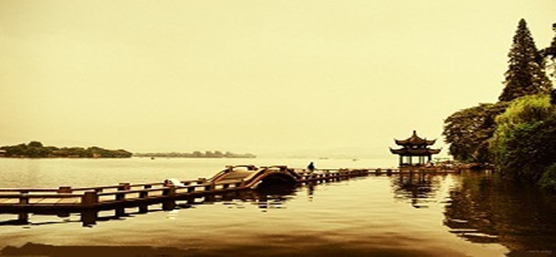

最强的春节杭州西湖游全攻略

苏堤春晓
现在苏堤已改为柏油路面，但苏堤的风光依然旖旎，春天清晨尤佳，“苏堤春晓”绝非虚名。
乘K4、308、504、游1、2、3、5路、假日1、4、5、7线到“苏堤”站、“花港”站下或乘西湖游船到花港可抵苏堤南端，或乘7、15、27、28、游1、2、3、4、5路、假日1、4、6线到“岳庙”站、“曲院风荷”站下，可达苏堤北端。
1.如果是骑自行车逛苏堤会有另外的感觉，两人同行而且是双人自行车，那更加有趣。
2.湖滨有不少自行车出租点，不过最好在人少的时候骑车上苏堤，否则总是得停下来,会很难受。
断桥残雪
断桥之名因何而来并不重要，这里有白娘子与许仙断桥相遇的说法，就足够它得意的了。
乘807、游1、2路到断桥站下。507路、游2路；27路葛岭站下；7路、K7路断桥站下。
桥的东北有碑亭，内立“断桥残雪”碑。伫立桥头，放眼四望，远山近水，尽收眼底，是欣赏西湖雪景之佳地。
平湖秋月
湖面平静如镜，秋月当空与湖水交相辉映，“一色湖光万顷秋”并不是每天都能看到的。湖畔有块题有“平湖秋月”的碑。
乘游1、2、3路到西泠桥或断桥下车，步行前往或乘西湖游船到中山公园上岸。15元6:00-17:30
著名的哈同花园与其紧邻。
柳浪闻莺
“醉柳”“狮柳”“浣纱柳”等，有柳洲之名并非空穴来风。
乘K4、12、30、308、504、游1、2路、假日5、7线到柳浪闻莺站下。5元
这里是欣赏三面云山一面水的最佳位置。
双峰插云
当群山云雾迷漫时，两峰偶露双尖，宛如峰插云霄，是一幅泼墨淋漓浓淡有致的水墨画卷。
7、27、807、游1、游2、游3路到洪春桥下车即可。
“双峰插云”御碑为清康熙皇帝手书，碑亭景点在洪春桥畔。
三潭印月
如今很难看到“三潭印月”的美景，但就算只是在白天看三潭也不失为西湖美景之一。位于西湖中央，坐游轮可达(票价20元)。6:00-18:00 20元
1.游三潭印月最好是在早上和16:00点左右。想要尽兴最好是租一条小船。一般开价在100元左右，但最低价能侃到40元左右，这当然要看你的本事。
2.西湖分布在湖滨、中山公园、花港、岳王庙等处的码头也有西湖游船可以乘坐。
3.站在小瀛洲，九曲桥、开网亭、我心相印亭、九曲桥中段的低矮粉墙花鸟漏窗前、东西长堤之中段、小瀛洲东南岸可以三塔和湖面为背景，都能拍出十分到位的片子。
花港观鱼
江南园林艺术与西洋园林艺术结合得最为巧妙的一处景致，众多的外国元首、国际友人游西湖都必到此处，不是没有道理。
乘K4、308、504、游1、2、3、5路、假日1、4、5、7线到“苏堤”、“花港”站下或乘西湖游船可到花港。6:00-17:30
南屏晚钟
能让康熙帝也发出“致足发人深省”的感慨，肯定不一般。原钟早不在，现在的铜钟为新铸。
乘K4、308、504、游1、2、3路、假日5、7线到净慈寺站下。10元，敲钟10元。6:00-17:30
雷峰夕照
白娘子被法海压在雷锋塔下的故事，给雷锋塔增添了不少神秘色彩。对于普通游客来说，可能倒掉的雷锋塔更有魅力一些。乘507路长桥公园站下；乘游2路净寺、长桥公园站下。为重现“雷峰夕照”，政府已投资重建雷峰塔。
曲院风荷
每当夏日风起，有荷香沁人心脾的“曲院风荷”最为迷人。
7路、507路、28路、15路均可到达。10元7:00-17:30